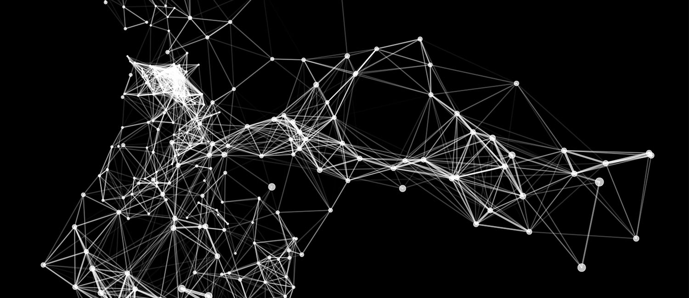
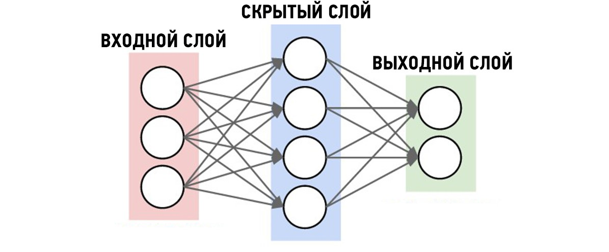

Что такое нейросеть и как она работает?
Представьте, что вам нужно написать очень важную программу, которая распознаёт светофоры по фото. Можно написать длинный список правил и алгоритмов по типу: «должны быть 3 светящихся кружка в определенном порядке: красный, желтый зеленый». Но всех условий невозможно учесть - алгоритм будет бессилен. В этом случае поможет нейронная сеть.
Нейросеть — это программа, которая умеет обучаться на основе данных и примеров. То есть она не работает по готовым правилам и алгоритмам, а пишет их сама во время обучения. Если показать ей миллион фотографий светофоров, она научится узнавать их под любыми углами, в любых ракурсах, при любом свете.
Кстати, когда ты проходишь капчу для подтверждения своего человеческого статуса, ты фактически помогаешь нейросетям.
Фишка нейросети в том, что алгоритмы в ней устроены как нейроны в человеческом мозге — они связаны между собой структурами, передающими сигналы друг другу.
А чтобы нейронка ещё быстрее решала задачи, разработчики придумали располагать нейроны на разных слоях:
- Входной слой — получает данные. Картинка раскладывается на пиксели, каждый из которых поступает на отдельный нейрон.
- Скрытые слои — обработка. Именно в них происходит обработка данных. Нейросеть узнаёт характерные детали и признаки. Условно можно сказать, что чем больше слоёв в нейронке, тем она умнее.
- Выходной слой — выдаёт результат. Нейросеть собирает пазл воедино и выводит полученное.
Очень упрощённо всю схему можно представить так:
